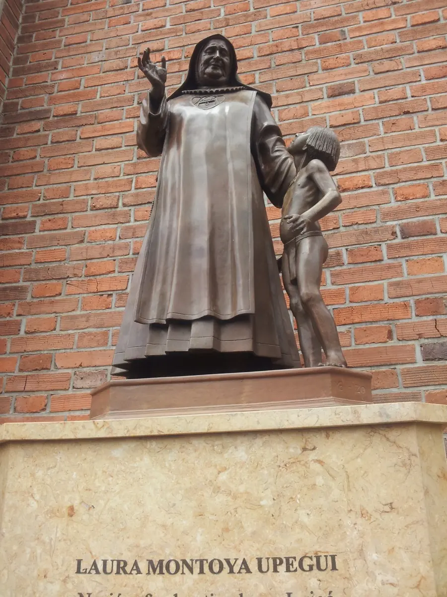
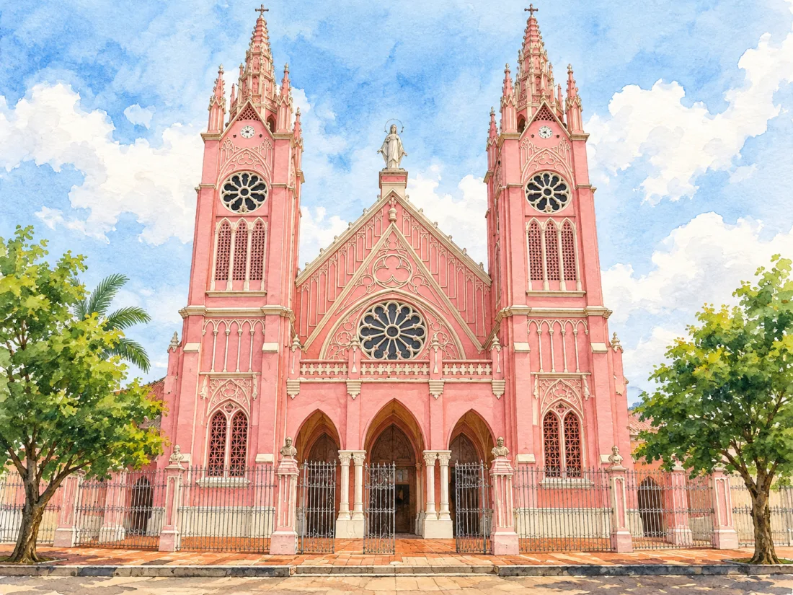
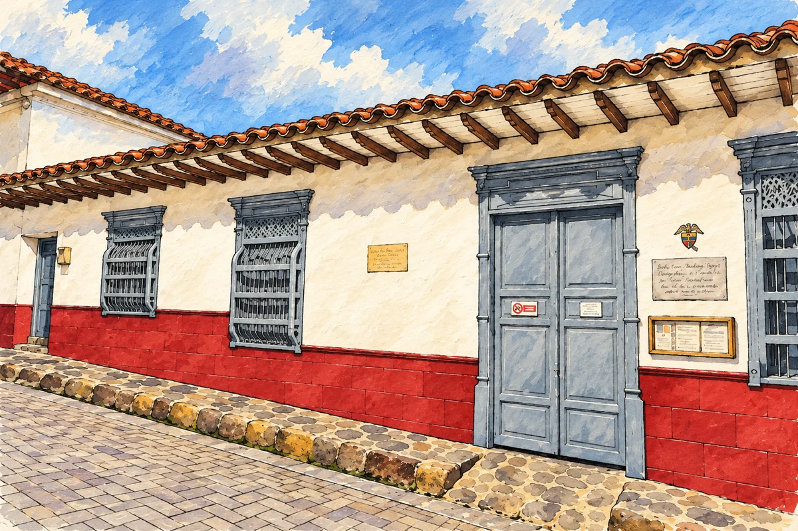
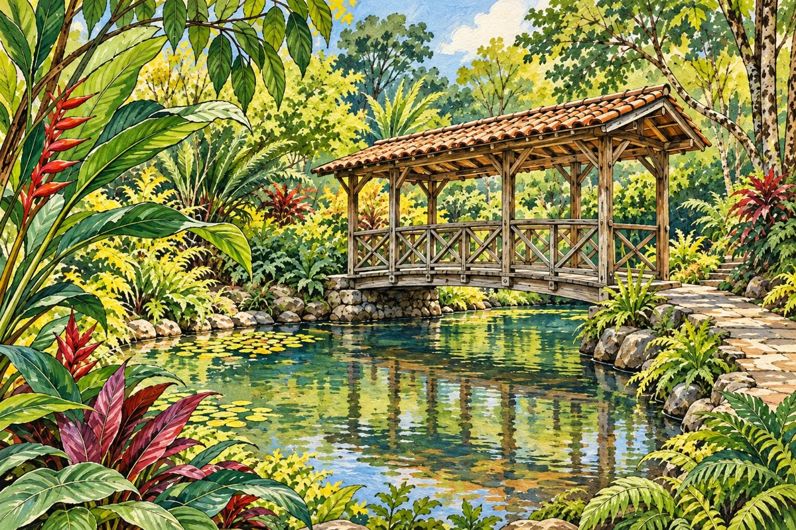

01
01Historic centre
Explore the main square and nearby streets to discover the town’s architecture and everyday life.
Find on the map ↗Southwestern Antioquia · Colombia
Streets to wander, coffee to share and crafts that tell stories. A destination among the mountains to experience your way.
What to see in Jericó ↓Discover its history ↓Do you have a business in Jericó? Leave your details to take part →
Discover the destination
Founded in 1850, Jericó grew around trade, coffee and muleteers’ routes. Its historic centre preserves streets, houses and balconies that tell part of that story and was recognised as national cultural heritage in 2018.
Jericó is also the birthplace of Laura Montoya, known as Mother Laura and Colombia’s first saint. Her work as a teacher and missionary is part of the town’s identity; her birthplace offers a way to discover that legacy.

Ideas for your visit
Choose the places that spark your curiosity and plan your route at your own pace.
01Explore the main square and nearby streets to discover the town’s architecture and everyday life.
Find on the map ↗A viewpoint overlooking the town and the surrounding mountains.
Find on the map ↗
03The pink church is one of the striking facades you can discover while walking through Jericó and exploring its religious heritage.
Find on the map ↗
04Discover a place connected to Laura Montoya’s history and Jericó’s religious heritage.
Find on the map ↗
05A garden near town with paths, a pond and abundant vegetation for a quiet walk and birdwatching.
Find on the map ↗A mountain climb with viewpoints across southwestern Antioquia. Check trail access and local conditions before setting out.
Find on the map ↗A rural natural attraction in Jericó, known as Chorros de Quebradona. Check with local sources for the trailhead and current access conditions.
Find on the map ↗Jericó attractions · Government of Antioquia ↗ · More destination information at Colombia Travel ↗
Connect the parts of your trip
Find how to get around, where to stay and eat, things to do and the services you need. Explore at your own pace.
There are no places published in this directory yet.
Locate the places you want to visit and check their opening hours, entry conditions and accessibility before planning your route.
Find Jericó on the map ↗There are no upcoming events published.
Organising an event? Let’s talk →Join Explorando Lugares
Be part of it.
Whether you run a hotel, restaurant, bar or shop, provide transport or organise tours and activities, we would like to hear about your business.
Leave your contact details. We will get in touch to discuss featuring your business on the portal.
I want to take part →